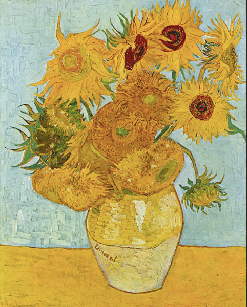
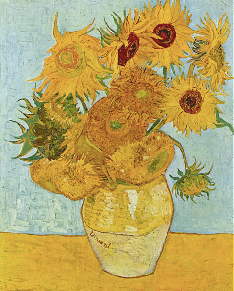

Vincent van gogh (1853–1890) foi um pintor holandês pós-impressionista, conhecido por suas pinceladas expressivas e cores intensas. Apesar de sua genialidade, ele enfrentou uma vida de dificuldades financeiras e problemas mentais.
 

Principais momentos de sua vida: Começou a pintar por volta de 1880, após fracassar como pastor e comerciante de arte. Suas primeiras obras, como Os Comedores de Batata (1885), eram sombrias e realistas. Em Paris (1886–1888), descobriu cores vibrantes e o estilo impressionista. Mudou-se para Arles (1888), onde pintou obras icônicas como Noite Estrelada (1889) e Girassóis (1888). Teve uma crise mental e cortou parte da própria orelha após uma briga com Gauguin. Passou seus últimos anos em um asilo, onde continuou pintando até seu suicídio em 1890. Van Gogh vendeu apenas uma pintura em vida, mas hoje é um dos artistas mais famosos do mundo, influenciando toda a arte moderna. Sua história é um exemplo de talento incompreendido e paixão pela criação.